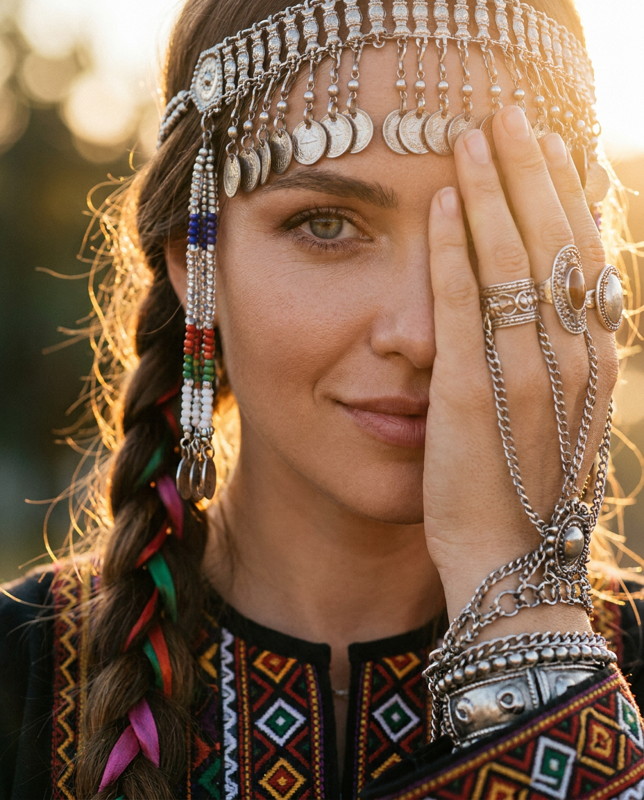
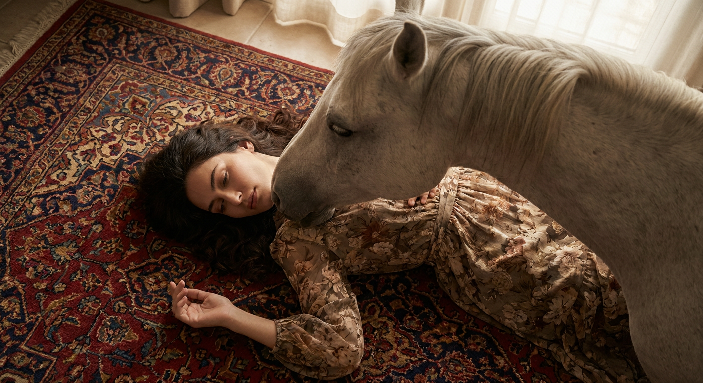
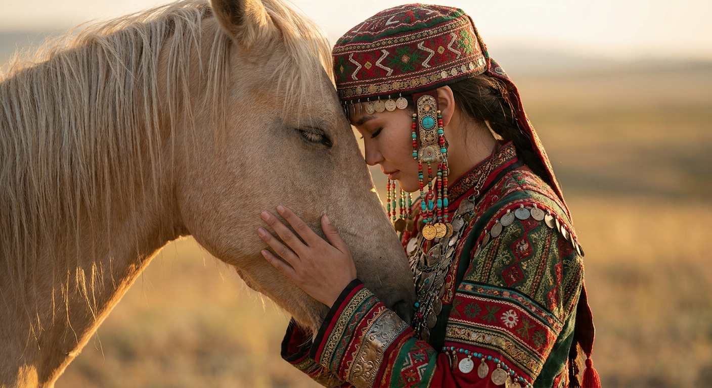
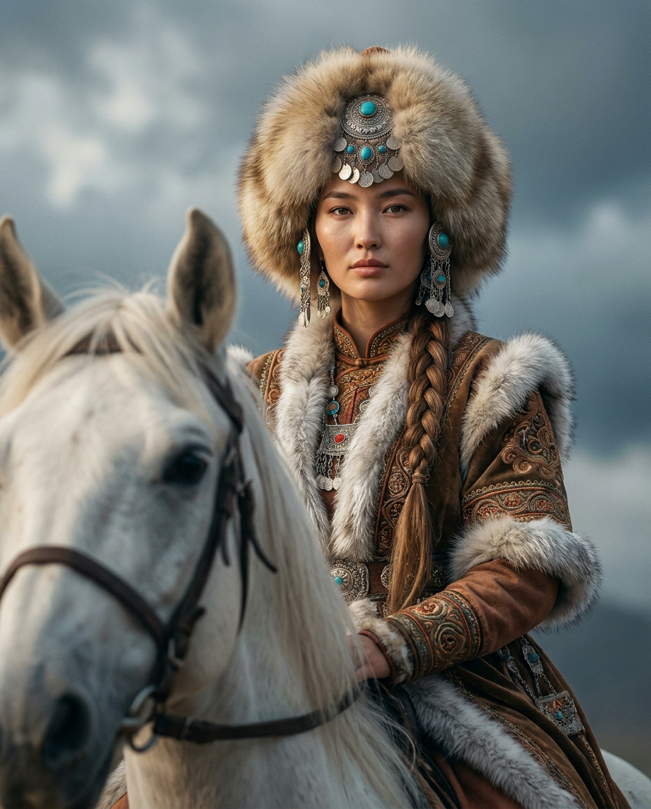
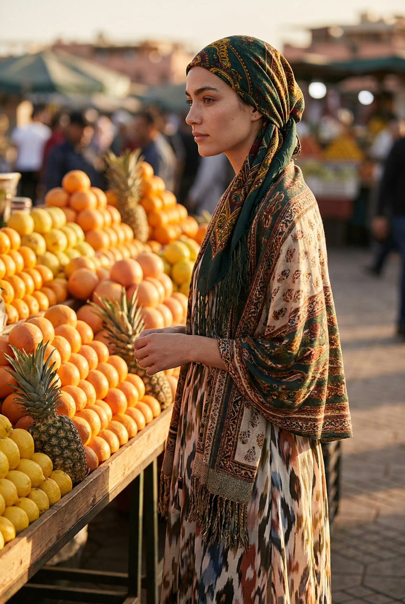
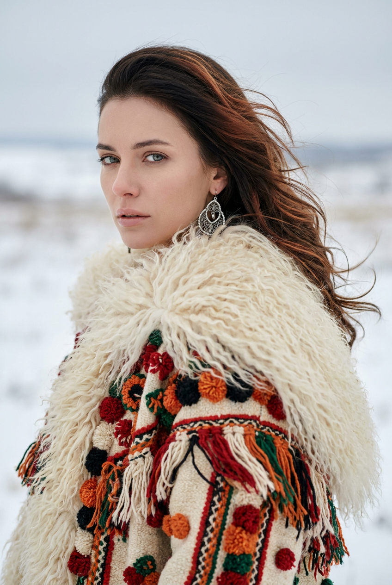
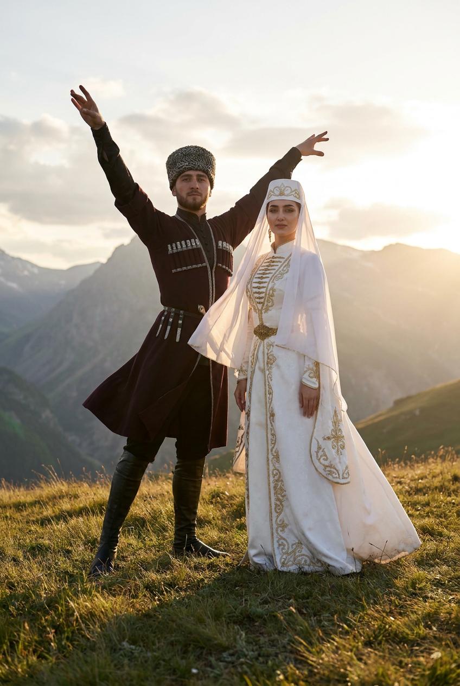
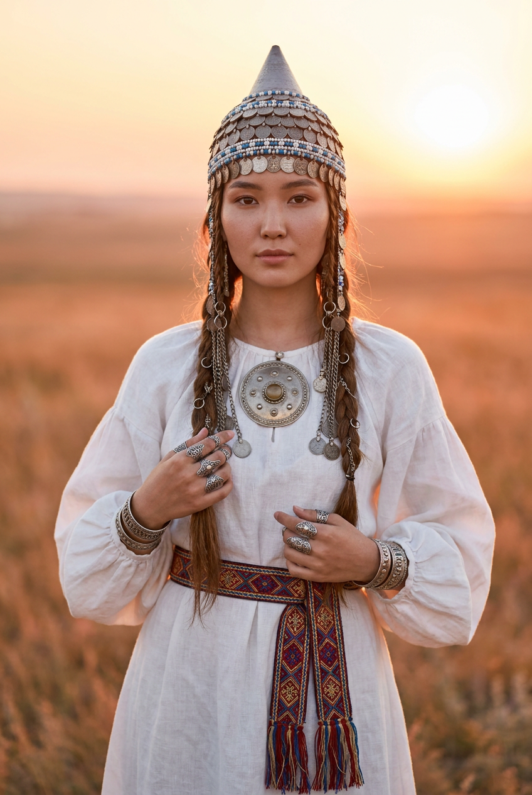
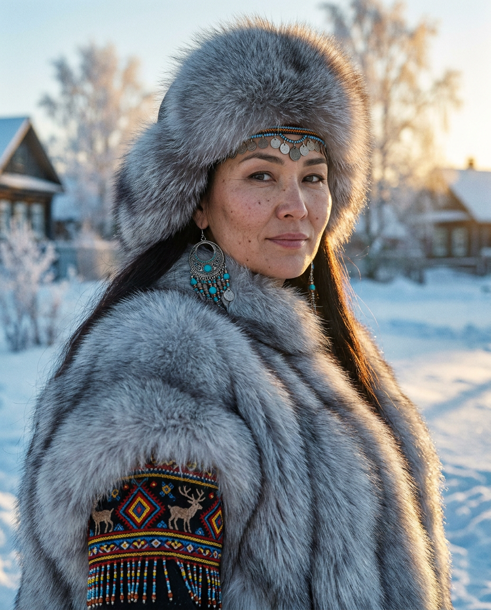
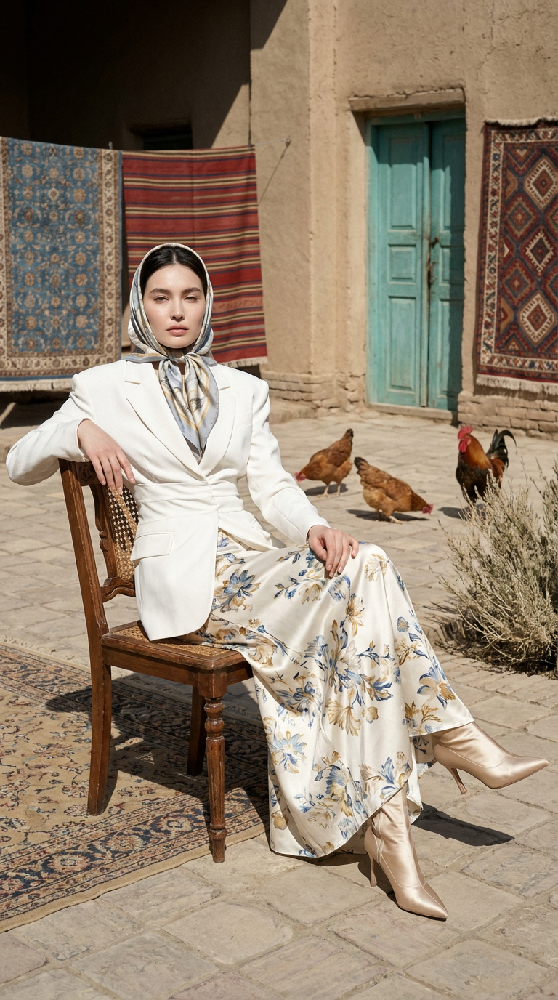

ИИ-фото в этническом стиле: 10 промптов для нейросети

Этнический образ сложно собрать вручную: костюм может выглядеть ненатурально, лицо потерять сходство, а фон — превратиться в случайный декор. Генерация помогает быстро проверить разные стили, свет и композиции, сохранив характер человека в кадре.
В подборке — 10 готовых сценариев для нейросети: от портрета с украшениями и съёмки на рынке до сцен с лошадью, национальными костюмами, заснеженной деревней и золотой степью.
Как сгенерировать такое фото: пошагово
Нужен снимок анфас при ровном свете, лицо в кадре целиком, без тёмных очков и головных уборов. Разрешение от 1000 пикселей по короткой стороне. Чем чётче исходник, тем точнее модель повторит черты.
Выберите сценарий ниже и нажмите «Копировать» — текст уйдёт в буфер целиком, вместе с командой сохранения внешности. Эта команда стоит первой строкой и отвечает за то, чтобы на выходе было ваше лицо, а не случайное.
Кнопка «Сгенерировать» рядом с каждым промптом открывает модель в новой вкладке. Nano Banana Pro работает с референсом лица — в отличие от моделей, которые генерируют портрет с нуля и узнаваемость теряют.
Промпт — в поле ввода, портрет — через загрузку референса. Порядок значения не имеет, но без референса команда сохранения внешности работать не будет: модели нечего сохранять.
Для сторис и ленты берите 9:16, для превью и обложек — 4:3. Первый результат редко идеален: если поза или свет ушли не туда, поправьте соответствующую часть промпта и запустите заново. Обычно хватает двух-трёх итераций.
10 промптов для генерации
1. Портрет с украшениями
Строго сохранить внешность по загруженному референсу: черты лица, пропорции, мимику и текстуру кожи без изменений. Крупный кинематографичный портрет женщины по грудь, с корпусом в три четверти и слегка наклонённой головой. Она смотрит прямо в объектив, в выражении лёгкая загадочная улыбка и проницательный взгляд. Одна рука поднята к лицу: пальцы, цепочки и кольца частично закрывают скулу, щёку, угол рта и половину лица. Волосы и этнический головной убор подсвечены мягким контровым светом. Съёмка на золотом часе, тёплое боковое солнце слева или справа, размытый фон с мягким боке. Объектив 85 мм, f/1.8, резкость на глазах, высокая детализация пор, микроволосков и естественных несовершенств кожи. Палитра — золотисто-янтарная, медная и тёплая, с кинематографичной цветокоррекцией.
2. Лошадь на старинном ковре

Строго сохранить внешность по загруженному референсу: черты лица, пропорции, мимику и текстуру кожи без изменений. Фотореалистичная fine art fashion-съёмка с поэтичной, слегка мистической атмосферой. Женщина лежит или полулежит на богатом старинном восточном ковре с глубоким орнаментом; композиция плотная, как сцена из арт-фильма или дорогой fashion-кампании. Рядом находится спокойная белая или светло-серая лошадь с мягкой гривой: она наклоняет голову к женщине, почти касаясь её лица или плеча, создавая ощущение доверия. Женщина расслаблена, глаза закрыты, поза естественная и немного мечтательная. Сохранить узнаваемые черты лица, естественную мимику и фактуру кожи. Передать реалистичную шерсть животного, сложный рисунок ковра, мягкий рассеянный свет и приглушённую этническую палитру.
3. Тихий контакт с лошадью

Строго сохранить внешность по загруженному референсу: черты лица, пропорции, мимику и текстуру кожи без изменений. Интимный фотореалистичный fashion-портрет в профиль или почти в профиль. Женщина стоит вплотную к светлой лошади: их лбы, носы и щёки почти соприкасаются. Она бережно держит морду животного расслабленными руками, пальцы выглядят изящно и естественно, жест напоминает тихий ритуал. Лошадь спокойная, благородная, с мягкой светлой гривой, выразительной текстурой шерсти и умным, добрым взглядом; глаза могут быть закрыты или полуприкрыты. Настроение — тишина, доверие и сильная связь человека с животным. Сделать лицо женщины узнаваемым, сохранить мимику и индивидуальные пропорции. Использовать мягкий естественный свет, неглубокую глубину резкости и этно-фольклорную, немного мистическую стилистику.
4. Всадница под облаками

Строго сохранить внешность по загруженному референсу: черты лица, пропорции, мимику и текстуру кожи без изменений. Кинематографичный портрет всадницы по пояс или чуть выше. На переднем плане крупно видна морда белой лошади с тёмным глазом, мягкими ноздрями, частью шеи и светлой гривой; девушка сидит верхом, в кадре её лицо, плечи и грудь. Фон слегка размытый: драматичное туманное небо с тяжёлыми серо-голубыми облаками и просветами. Свет мягкий боковой, источник расположен слева или справа немного выше уровня глаз, он моделирует лицо женщины и шею лошади. Фокус — на лице, лошадь остаётся узнаваемой. Объектив 85 мм, f/1.8, малая глубина резкости, лёгкое плёночное зерно. Цвета тёплые земляные: охра, терракота, бронза и приглушённое золото.
5. Этно-образ на рынке

Строго сохранить внешность по загруженному референсу: черты лица, пропорции, мимику и текстуру кожи без изменений. Фотореалистичная fashion-editorial съёмка на открытом рынке или возле фруктового прилавка в тёплый вечерний час. Женщина стоит спокойно, корпус немного повёрнут к камере, голова обращена в профиль, глаза опущены или прикрыты. Выражение умиротворённое, уверенное и чуть таинственное, как в travel-кампании модного журнала. На голове и плечах яркий мягкий платок с насыщенным узором в зелёных, жёлтых, красных и оранжевых оттенках. Вокруг — корзины и прилавок со спелыми фруктами, но фон не перетягивает внимание. Сохранить узнаваемость лица, естественную мимику и текстуру кожи. Использовать тёплый боковой свет, мягкое боке, натуральные цвета, реалистичные ткани и атмосферу живого вечернего базара.
6. Проникновенный этно-портрет

Строго сохранить внешность по загруженному референсу: черты лица, пропорции, мимику и текстуру кожи без изменений. Вертикальная профессиональная этно-фэшн фотография в формате 2:3. Женщина показана чуть ниже талии, корпус развёрнут в три четверти влево, голова повернута к объективу. Взгляд прямой, глубокий и задумчивый, с лёгкой меланхолией. Светло-серо-голубые глаза ясные, с длинными натуральными ресницами; брови тёмно-русые, ровные, с мягким естественным изгибом. Губы средней полноты, слегка приоткрыты, покрыты прозрачной нюдово-розовой помадой с сатиновым блеском. Макияж минимальный: матовый тон с лёгким сиянием на скулах, едва заметный персиковый румянец и бронзовая растушёвка на веках. Передать натуральную кожу, точные пропорции лица, этнический fashion-настрой, высокое разрешение и детальную фактуру ткани.
7. Пара в чеченских костюмах

Строго сохранить внешность по загруженному референсу: черты лица, пропорции, мимику и текстуру кожи без изменений. Фотореалистичная кинематографичная фотография пары в традиционных чеченских национальных костюмах на фоне величественных гор. Они стоят на травянистом склоне или вершине холма, за спиной — горные хребты, мягкое небо и яркий солнечный свет. Мужчина находится чуть позади и левее, корпус выпрямлен, руки подняты в динамичной торжественной позе, напоминающей национальный танец; выражение уверенное и спокойное. Женщина стоит справа или немного впереди, держится статно и грациозно, руки свободно опущены, пальцы расслаблены. Сохранить отдельное сходство каждого человека, естественную мимику и реалистичные детали костюмов. Передать фактуру тканей, горный воздух, солнечные блики и уважительное отношение к традиционной одежде.
8. Белое платье в степи

Строго сохранить внешность по загруженному референсу: черты лица, пропорции, мимику и текстуру кожи без изменений. Вертикальный фотореалистичный портрет в полный рост или по пояс на фоне золотистых степных просторов во время заката. Женщина стоит прямо, корпус слегка развёрнут в три четверти, плечи расправлены, спина ровная. Руки опущены, либо одна ладонь легко касается пояса или нагрудной бляхи. Она смотрит в камеру спокойно и умиротворённо, на губах едва заметная полуулыбка. На ней белое струящееся платье в пол из льна или хлопка, с мягкими складками и объёмными длинными рукавами, присборенными у запястий или расклешёнными. Низкое солнце окрашивает небо в оранжево-розовые тона, боковой свет даёт тёплые контуры. Женщина резкая, степь уходит в мягкое боке. Показать детальную кожу, ткань и украшения.
9. Зимний деревенский портрет

Строго сохранить внешность по загруженному референсу: черты лица, пропорции, мимику и текстуру кожи без изменений. Кинематографичный портрет женщины по пояс в морозном деревенском пейзаже. Она стоит анфас или в три четверти, плечи расправлены, спина прямая, взгляд направлен в камеру и выглядит спокойным и уверенным. На заднем плане — заснеженное поле, деревянные дома, изгороди, хвойные деревья и покрытые инеем ветки. Съёмка проходит в золотой час: низкое солнце сбоку создаёт длинные тени и тёплый контражур. Основная палитра холодная, голубовато-белая и серебристая, с золотисто-янтарными бликами. Объектив 85 мм, малая глубина резкости, фон превращается в мягкое боке, лицо остаётся резким. Добавить лёгкое плёночное зерно, высокое разрешение, реалистичную текстуру кожи, зимней одежды и снега.
10. Аристократка на стуле

Строго сохранить внешность по загруженному референсу: черты лица, пропорции, мимику и текстуру кожи без изменений. Гиперреалистичное профессиональное fashion-фото вертикального формата 9:16. Женщина сидит по центру на старинном деревянном стуле с резной спинкой и плетёным сиденьем; стул стоит на каменной мощёной площадке. Поза расслабленная и аристократичная: корпус немного откинут назад, одна нога закинута на другую и вытянута вперёд, в кадре видна светлая остроносая обувь. Левая рука лежит на спинке, правая свободно опирается на колено. Голова слегка поднята, взгляд прямой, спокойный и благородный, с лёгкой меланхолией. Губы сомкнуты, естественного нежно-розового оттенка. Макияж почти незаметный: ровная кожа с мягким сиянием и лёгкий румянец. Передать фактуру дерева, камня, плетения и ткани, мягкий естественный свет и редакционную композицию.
Что важно учесть в этом стиле
Этнический образ держится на связи костюма, локации, света и жеста. Если добавить только орнамент, кадр будет похож на обычный портрет с декоративным платком. Укажите конкретную среду: степь на закате, горный склон, рынок, зимнюю деревню или каменную площадку.
Для сходства с референсом отдельно прописывайте лицо, мимику и возраст. Не перегружайте описание десятками украшений: один выразительный головной убор, платок или нагрудная деталь обычно работают лучше. Для фотореализма задавайте объектив, фокус на глазах, натуральную кожу и понятное направление света.
Идеи для вариаций
- Замените золотой час на пасмурное утро, лунный свет или мягкий свет от костра.
- Перенесите съёмку из степи на берег озера, в каменный двор или на деревянную террасу.
- Добавьте крупный этнический кулон, вышитый пояс, серьги или старинную брошь.
- Попробуйте чёрно-белую плёночную версию с одним цветовым акцентом в костюме.
- Попросите нейросеть сделать три кадрирования: крупный портрет, по пояс и полный рост.
Как собрать свой промпт
Начните с формата кадра и крупности: портрет по плечи, по пояс или полный рост. Затем опишите позу, направление взгляда и главный объект рядом с моделью. После этого добавьте одежду, материалы, украшения и локацию — именно эти детали формируют этнический характер.
В финале задайте свет и технику: «мягкий боковой свет», «85 мм, f/1.8», «фокус на глазах», «фон в боке», «высокое разрешение». Для одного образа меняйте за раз только один параметр и делайте по 3–5 попыток: так проще понять, что именно улучшило результат.
Ошибки, из-за которых кадр не получается
- Слишком общий костюм. Формулировка «традиционная одежда» даёт случайный наряд. Укажите материал, цвет, крой, головной убор и вид орнамента.
- Перегруженная сцена. Десятки предметов спорят с лицом. Оставьте один главный объект и спокойный фон.
- Нечёткая поза. Опишите положение корпуса, рук, ног и головы, иначе модель может получить лишние пальцы или неестественный разворот.
- Несовместимый свет. Закат, холодный снег и жёсткая вспышка в одном запросе дают конфликтующие тени.
- Слишком сильная ретушь. Просите сохранить поры, микроволоски и естественную мимику, иначе лицо станет пластиковым и потеряет сходство.
Частые вопросы
Как сделать такое ИИ-фото бесплатно?
Для первых попыток подойдут Kandinsky и Шедеврум: они позволяют генерировать изображения без оплаты, но качество сходства по референсу, число доступных генераций и настройки могут быть ограничены. Krea AI и Arena.ai удобны для тестов разных моделей, однако функции работы с загруженным лицом зависят от конкретного режима и могут меняться. Бесплатный результат почти всегда требует нескольких дублей и ручного отбора.
Как сохранить сходство с лицом на референсе?
Используйте чёткое фото анфас или в лёгком повороте, без очков, сильных теней и фильтров. В промпте перечислите черты, которые нельзя менять, а позу и одежду описывайте отдельно. Если сервис предлагает силу влияния референса, начните со среднего значения: слишком сильное часто ломает сцену, слишком слабое — лицо.
Почему нейросеть искажает руки и украшения?
Сложные пальцы, цепочки и мелкие орнаменты остаются трудными для генерации. Упростите жест, не закрывайте рукой сразу половину лица и попросите естественную анатомию, пять пальцев на каждой руке, симметричные украшения. Для удачного варианта обычно нужно 3–8 генераций.
Можно ли использовать эти промпты для Nano Banana Pro?
Да, их можно адаптировать под Nano Banana Pro и другие модели, которые работают с референсами. Загрузите исходное фото отдельно, затем вставьте описание сцены. Если модель плохо понимает длинный запрос, разделите его на четыре части: лицо, поза, одежда и фон.